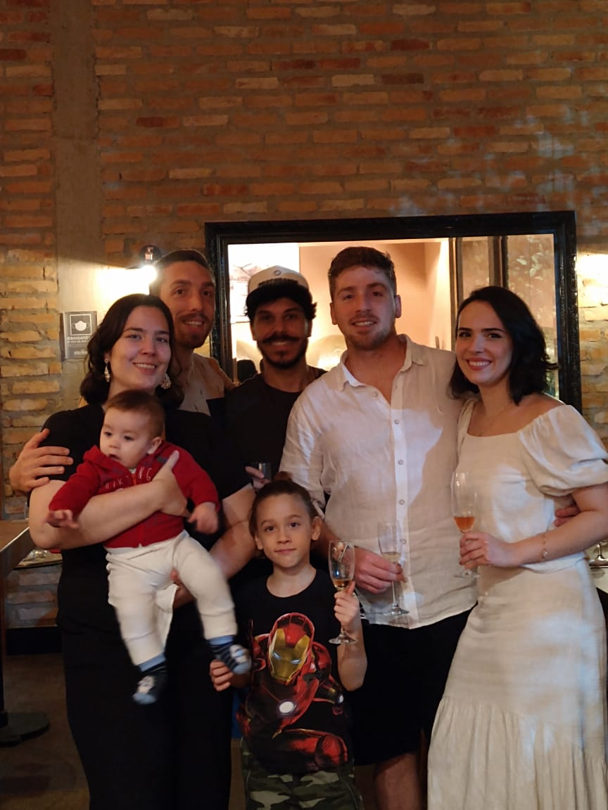

Quem é ?
Genadi Reuben é brasileiro nascido em Salvador no estado da Bahia, atualmente residindo em Santos.
É pai do Benjamin e do Bernardo e é casado com Laura.
Estudou Direito pela Universidade Santa Cecília e formou-se em 2015, aprovado na OAB e inscrito no mesmo ano passou a atuar na área, tendo participado de diversos projetos.
Atualmente é estudante de desenvolvimento de software na TRYBE, a maior escola de programação do Brasil, para desenvolver novas habilidades e virar a chave para uma nova carreira de sucesso.

Atributos:
- Resiliente;
- Determinado;
- Paciente;
- Perseverante;
- Curioso.
Este portfólio foi desenvolvido como atividade no curso de desenvolvimento de software da TRYBE.